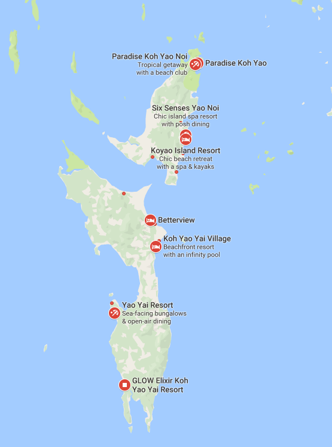

Overpriced Island is nestled in a difficult to reach corner of the Wealthy Jerk Archipelago. Although it can be challenging to arrange travel, the trip is well worth the effort! Please use our tips and recommendations below to smooth your journey!

The Wealthy Jerk Archipelago is know for it's flocks of angry, swarming birds, which prevent many planes from landing nearby. For those arriving by air, we recommend booking travel into one of the nearby port cities or major airports.
Once you have arrived in country, you will need to arrange land transit to our ferry pick up at the harbor at Lost Point. Our region has no formal organized public transit or taxi system. Feel free to negiotiate a taxi ride with the numerous agressive independent taxis that congregate at the airport.
Pro tip: The taxi drivers do not have your best interest at heart. Be agressive to the point of rude when negiotiating.